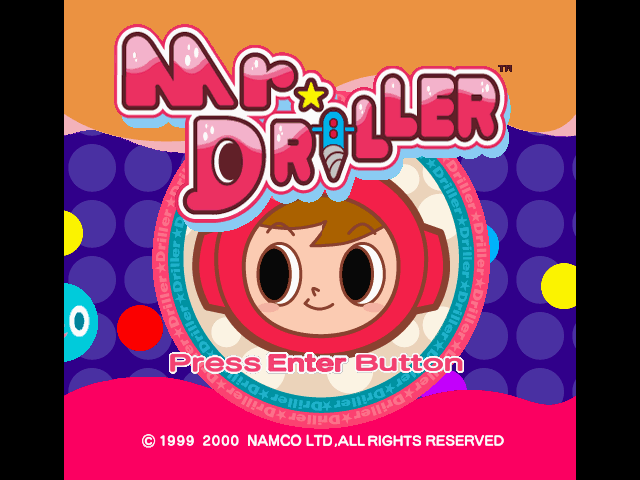
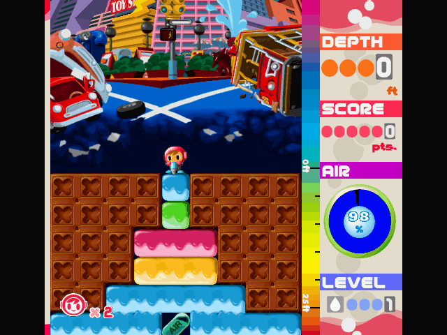

名稱：爆鑽小子／鑽地先生 (Mr. Driller，英文版)
簡介：Namco 1999年出品的益智遊戲，2001年移植至Windows版。遊戲規則為玩家透過消除在
遊戲區域的彩色方塊，讓上方的方塊往下掉，只要四個以上同色方塊相鄰即可消去，
而在挖堀過程會不斷消耗氧氣，需要收集關卡中的氧氣膠囊來補充 [待補]。


保護：序號，破解碼：
driller.exe
85 C0 0F 84 A5 00 00 00
E9 A8 00 00 00 90 90 90